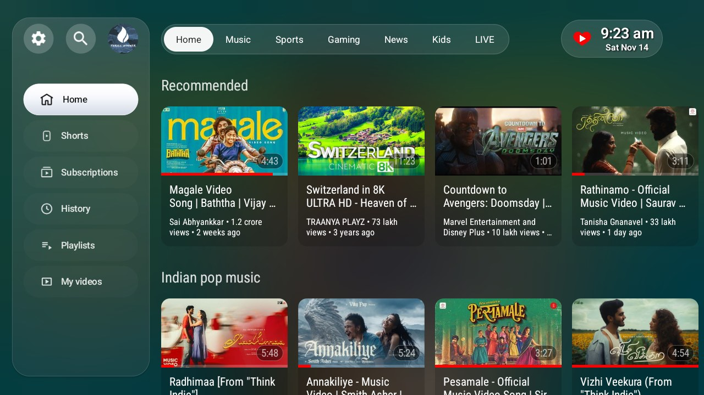

Install MeeTube TV
For Android TV, Google TV and Fire TV devices running Fire OS. A USB pen drive is an easy way to get started if your TV has a USB port.

Use a USB pen drive
Have a computer, a pen drive and a TV that can read USB storage? Grab the universal TV installer here.
Download TV APK- Copy the TV APK to your pen drive. On your computer, download the file above and copy it to the drive. Its name starts with MeeTubeTV_ and ends in _universal.apk. Eject the drive.
- Open it on the TV. Plug the drive into the TV. Open a file manager, choose the USB drive and select the APK. If you need a file manager, install one from your TV’s app store.
- Allow the file manager to install the app. If the TV asks for permission, choose Settings and allow installs from that file manager. Return to the file and select it again. See TV settings for menu names.
- Select Install, then Open. The next time you want to watch, choose MeeTube TV from your TV’s apps.
Use the MeeTube mobile app
MeeTube can install the TV app over your home Wi-Fi. You’ll need an Android phone running Android 8.0 or later and a TV that supports network debugging.
Get MeeTube for your phone- Connect your phone and TV to the same Wi-Fi. In MeeTube, open Settings › About and scroll to the MeeTube TV card. Open its installer. On the Install on TV screen, choose Google TV / Android TV or Fire TV.
- Enable debugging on your TV. Follow the phone-install settings for Android TV or Google TV or Fire TV below. If your TV only offers wireless debugging with a pairing code, use the USB pen drive method.
- Find the TV in MeeTube. Tap Search my Wi-Fi and allow local network access if asked. Select your TV’s address. If it doesn’t appear, enter its IPv4 address in TV IP address. You can find the address in your TV’s network settings below.
- Tap Install MeeTube TV. When your TV asks to allow debugging from your phone, select Allow on the TV. MeeTube downloads the TV app, installs it and opens it. If it doesn’t open automatically, launch MeeTube TV from your TV’s apps.
Find your TV settings
Menu names vary by TV model and software version.
Android TV & Google TV
USB pen drive. From the APK’s permission prompt, open Settings and allow the file manager. To find this later, look under Apps or Privacy for Security & restrictions › Unknown sources or Install unknown apps.
Phone installation. Open Settings › System › About (on older TVs, Device Preferences › About). Press Android TV OS build or Build seven times. Go back to System or Device Preferences, open Developer options and enable USB debugging. If offered, also enable Network debugging or ADB over network. You can turn debugging off after installation.
TV IP address. Open Settings › Network & Internet and select your connected Wi-Fi network.
Fire TV with Fire OS
Open Settings › My Fire TV › Developer Options. If Developer Options is hidden, open My Fire TV › About, highlight the device name and press the remote’s select button seven times. Press Back to see Developer Options.
USB pen drive. In Developer Options, open Install unknown apps and enable your file manager. Older versions show a single Apps from Unknown Sources switch.
Phone installation. Enable ADB debugging in Developer Options. You can turn it off after installation.
TV IP address. Open Settings › My Fire TV › About › Network.